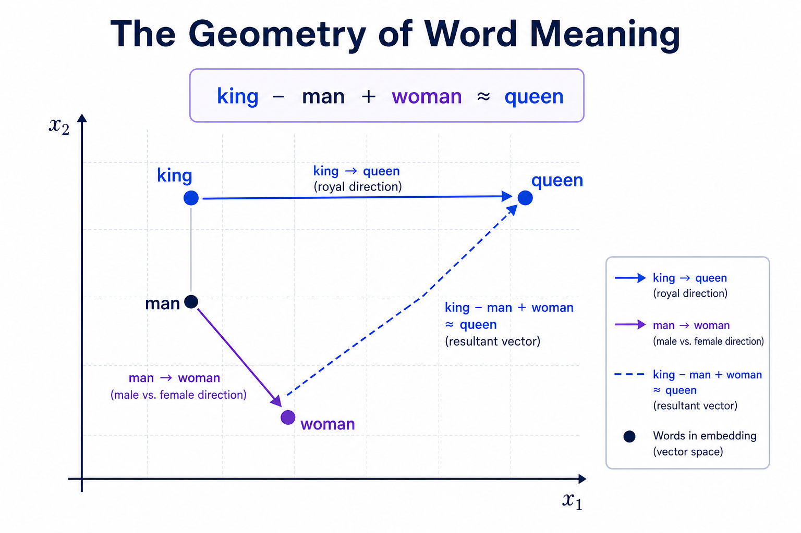
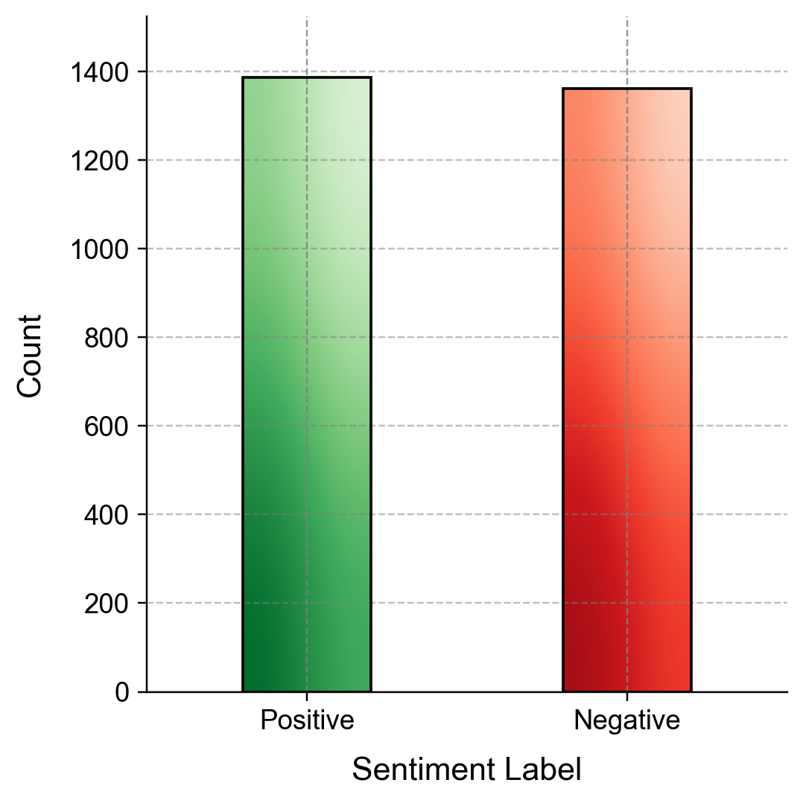
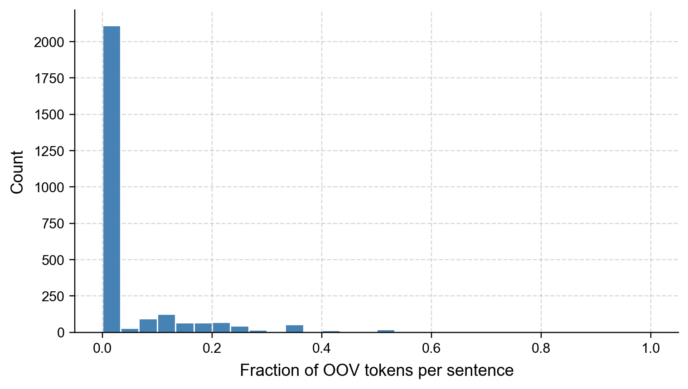
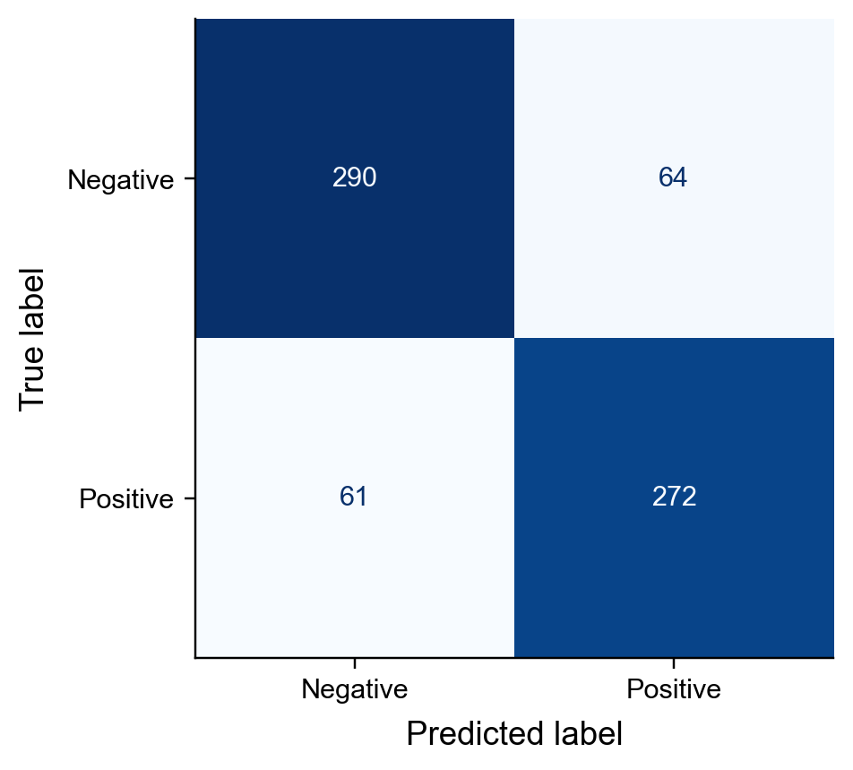

Remark
These lecture notes are in early access and will continue to evolve based on classroom experience and feedback.
3.3. Word Embeddings for Text Classification#
Section Goal
By the end of this section you will understand why dense word embeddings capture meaning in ways that bag-of-words cannot, and you will be able to build a practical sentiment classifier by loading a pre-trained Word2Vec model, averaging word vectors to form sentence representations, and evaluating the result against a bag-of-words baseline.
3.3.1. Learning objectives#
By the end of this section, you should be able to:
Explain what word embeddings are and how they encode semantic similarity in a geometric space.
Use concrete analogical reasoning examples to illustrate the properties of a well-trained embedding space.
Build sentence-level feature vectors by averaging word embeddings.
Train and evaluate a logistic regression classifier on embedding-based features.
Compare the performance of word-embedding features to bag-of-words baselines.
Identify the limitations of word-averaging as a sentence representation strategy.
3.3.2. From bags of words to dense vectors#
In Section 2, we represented documents as sparse count vectors: each dimension corresponds to a vocabulary word, and its value is the word’s count (or TF–IDF weight) in the document. This approach has two fundamental limitations:
Vocabulary-sized sparsity: for a corpus with 50,000 unique words, every document becomes a vector with 50,000 dimensions, of which the vast majority are zero.
No semantic similarity: the words excellent, outstanding, and superb are three completely different dimensions in a bag-of-words matrix, with no indication that they are synonyms.
Word embeddings solve both problems: each word is mapped to a dense, low-dimensional vector (typically 50–300 values) such that words with similar meanings have similar vectors. Similarity in the embedding space is measured by the cosine similarity between two vectors [Salton and McGill, 1983]:
A cosine similarity of 1.0 means the two vectors point in exactly the same direction (identical meaning); 0.0 means they are orthogonal (unrelated); −1.0 means they point in opposite directions (antonyms in a well-trained space).
Why cosine similarity and not Euclidean distance?
Word vectors from different parts of the vocabulary may have very different magnitudes (norms). A high-frequency word like “the” may have a much larger norm than a rare technical term. Using Euclidean distance would penalize vectors simply for being large, conflating magnitude with direction. Cosine similarity normalizes both vectors to unit length before measuring the angle between them — so only direction (meaning) matters, not magnitude (frequency-related scale).
3.3.3. How Word2Vec learns embeddings#
Word2Vec (Mikolov et al., 2013) is the most widely used algorithm for learning word embeddings. It trains a shallow neural network on a large text corpus using one of two objectives:
Skip-gram: given a center word, predict the surrounding context words within a fixed window. The model is trained to assign high probability to words that actually appear in context and low probability to randomly chosen “noise” words.
CBOW (Continuous Bag of Words): given the context words, predict the center word.
Neither objective requires labeled data — the “labels” come from the natural co-occurrence structure of the text itself. This is why word embeddings are called self-supervised: the corpus provides its own supervision signal.
After training, the embedding matrix (one row per vocabulary word) is extracted and used as a lookup table. Words that appear in similar contexts end up with similar vectors because the model updates them in similar ways during training.
Model |
Training corpus |
Vocabulary |
Dimensions |
|---|---|---|---|
Google News Word2Vec |
~100 billion words of Google News |
~3 million words |
300 |
GloVe (wiki-gigaword) |
Wikipedia + Gigaword (~6B tokens) |
~400,000 words |
50/100/200/300 |
fastText (Common Crawl) |
~600 billion tokens |
~2 million words |
300 |
3.3.4. The geometry of word meaning#
A useful property of well-trained embedding spaces is that semantic and syntactic relationships often appear as roughly consistent directions in the vector space. One famous example is:
This captures the idea that word vectors can encode structured relationships: if you move from man to woman, and apply a similar shift to king, you land near queen. These patterns are not hand-coded; they emerge from training on large corpora with objectives such as Skip-gram or CBOW.
{kind=link}

Fig. 3.9 Word2Vec embeddings often preserve linear relationships in vector space, such as the classic king − man + woman ≈ queen analogy.#
Other analogies that hold in the Google News Word2Vec model:
Analogy |
Equation |
|---|---|
Capital cities |
\(\text{Paris} - \text{France} + \text{Germany} \approx \text{Berlin}\) |
Verb tense |
\(\text{running} - \text{run} + \text{swim} \approx \text{swimming}\) |
Comparative adjective |
\(\text{bigger} - \text{big} + \text{tall} \approx \text{taller}\) |
Company → product |
\(\text{Google} - \text{search} + \text{music} \approx \text{Spotify}\) |
These regularities are not explicitly programmed; they emerge from training the model to predict which words appear in similar contexts across a large corpus.
3.3.4.1. Querying the Word2Vec model for similar words#
Words most similar to 'economy':
economic similarity = 0.7219
econ_omy similarity = 0.6943
economies similarity = 0.6638
theeconomy similarity = 0.6518
ecomony similarity = 0.6482
recession similarity = 0.6336
ecomomy similarity = 0.6118
econonmy similarity = 0.6116
recesssion similarity = 0.5794
GDP similarity = 0.5782
king - man + woman ≈
queen score = 0.7118
monarch score = 0.6190
princess score = 0.5902
crown_prince score = 0.5499
prince score = 0.5377
3.3.4.2. Comparing representations#
Property |
Bag-of-Words (TF–IDF) |
Word2Vec (averaged) |
|---|---|---|
Dimensionality |
Vocab size (~50K) |
300 |
Sparsity |
Very sparse (~99% zeros) |
Dense |
Semantic similarity |
No |
Yes (cosine distance) |
Handles synonyms |
No |
Yes |
Captures word order |
No |
No (when averaged) |
Requires labeled data |
No (unsupervised) |
No (unsupervised) |
Out-of-vocabulary words |
Creates new dimension |
Skipped |
Interpretability |
High (word → dimension) |
Low |
Both representations complement each other. TF–IDF is fast, interpretable, and works well when vocabulary overlap between train and test is high. Word embeddings generalize better to synonyms and domain shifts.
3.3.5. The sentiment dataset#
The lab uses the Sentiment Labelled Sentences dataset from the UCI Machine Learning Repository. It contains 3,000 sentences drawn from three review platforms, each labeled as positive (1) or negative (0) sentiment.
Source |
Positive |
Negative |
Total |
|---|---|---|---|
Amazon product reviews |
500 |
500 |
1,000 |
IMDB movie reviews |
500 |
500 |
1,000 |
Yelp restaurant reviews |
500 |
500 |
1,000 |
Total |
1,500 |
1,500 |
3,000 |
The dataset is perfectly balanced and covers three distinct review domains, making it a good test of whether embeddings trained on news text generalize to consumer reviews.
Example sentences:
Label |
Sentence |
|---|---|
Positive (1) |
“The food was absolutely delicious and the service was impeccable.” |
Negative (0) |
“Worst experience I’ve ever had. Will never return.” |
Positive (1) |
“Great movie! Kept me on the edge of my seat the whole time.” |
Negative (0) |
“The product stopped working after two days. Total waste of money.” |
| text | label | source | |
|---|---|---|---|
| 0 | So there is no way for me to plug it in here i... | 0 | amazon |
| 1 | Good case, Excellent value. | 1 | amazon |
| 2 | Great for the jawbone. | 1 | amazon |
| 3 | Tied to charger for conversations lasting more... | 0 | amazon |
| 4 | The mic is great. | 1 | amazon |
| ... | ... | ... | ... |
| 2743 | I think food should have flavor and texture an... | 0 | yelp |
| 2744 | Appetite instantly gone. | 0 | yelp |
| 2745 | Overall I was not impressed and would not go b... | 0 | yelp |
| 2746 | The whole experience was underwhelming, and I ... | 0 | yelp |
| 2747 | Then, as if I hadn't wasted enough of my life ... | 0 | yelp |
2748 rows × 3 columns
{kind=link}

Fig. 3.10 Class distribution of the sentiment review dataset, demonstrating a perfectly balanced 50:50 sample split between positive and negative labels across all three source platforms.#
3.3.6. Text preprocessing#
Before computing embeddings, we tokenize the sentences and remove stopwords and punctuation. Word tokenization splits a sentence into individual tokens; NLTK’s word_tokenize handles contractions (e.g., “don’t” → [“do”, “n’t”]) and punctuation gracefully.
Example — before and after preprocessing:
Before: "The food was absolutely delicious and the service was impeccable."
After: ["food", "absolutely", "delicious", "service", "impeccable"]
Stopwords (the, was, and) are removed. The remaining tokens are the content words that carry the sentiment signal. Crucially, while classical bags-of-words often rely heavily on aggressive stemming (e.g., reducing ‘delicious’ to ‘delici’), embedding models work best with intact words because their pre-trained vocabularies (like Google News) contain the exact semantic weights for words like ‘absolutely’ and ‘impeccable’ in their native forms.
3.3.7. Building embedding features by averaging word vectors#
Given a tokenized sentence, we obtain a sentence-level feature by averaging the Word2Vec vectors for all tokens that appear in the model vocabulary. Tokens not covered by the vocabulary are skipped; the result is normalized by the number of covered tokens.
Worked example:
Consider the sentence [“food”, “absolutely”, “delicious”, “service”, “impeccable”]:
vector("food") = [0.12, -0.05, 0.33, ..., 0.07] (300 values)
vector("absolutely") = [0.21, 0.15, 0.08, ..., 0.14]
vector("delicious") = [0.18, -0.02, 0.44, ..., 0.09]
vector("service") = [0.05, 0.08, 0.17, ..., 0.11]
vector("impeccable") = [0.22, 0.19, 0.38, ..., 0.12]
Average = [0.156, 0.070, 0.280, ..., 0.106] # sum / 5
This single 300-dimensional vector now serves as the feature representation for the entire sentence. Words associated with positive sentiment tend to cluster in certain regions of the embedding space, so positive and negative sentence averages land in different regions — allowing the logistic regression to draw a separating boundary.
3.3.7.1. Coverage analysis#
Not all tokens in the sentiment corpus appear in the Google News vocabulary. Understanding coverage helps assess representational quality. Words outside the vocabulary are simply skipped in the average.
Mean OOV rate: 4.4%
Sentences with >50% OOV tokens: 0.3%
{kind=link}

Fig. 3.11 Histogram showing the distribution of the Out-of-Vocabulary (OOV) token rate per sentence when using the Google News Word2Vec model.#
The Google News model has broad coverage of standard English words, but informal language (slang, product names, misspellings) will produce higher OOV rates and degraded representations.
3.3.8. Classifying with logistic regression#
The averaged embedding vectors become the feature matrix for a standard logistic regression classifier. Note that we split the processed texts (not all of them) into train and test before fitting the classifier, to avoid data leakage.
| Value | |
|---|---|
| Accuracy | 0.8180 |
| ROC AUC | 0.9014 |
| precision | recall | f1-score | |
|---|---|---|---|
| Negative | 0.8262 | 0.8192 | 0.8227 |
| Positive | 0.8095 | 0.8168 | 0.8132 |
| accuracy | 0.8180 | 0.8180 | 0.8180 |
| macro avg | 0.8179 | 0.8180 | 0.8179 |
| weighted avg | 0.8181 | 0.8180 | 0.8181 |
{kind=link}

Fig. 3.12 Confusion matrix for the Logistic Regression classifier using averaged Word2Vec embeddings. The colorbar has been omitted for a cleaner layout.#
The lab achieves approximately 80–81% accuracy on the test set — a strong baseline for such a simple aggregation strategy. Both precision and recall are roughly balanced between the two classes, reflecting the balanced dataset.
3.3.8.1. Comparing to a bag-of-words baseline#
To understand the value of word embeddings, compare against a TF–IDF baseline trained on the same train/test split.
| Value | |
|---|---|
| Accuracy | 0.8049 |
| ROC AUC | 0.8927 |
| precision | recall | f1-score | |
|---|---|---|---|
| Negative | 0.7989 | 0.8305 | 0.8144 |
| Positive | 0.8119 | 0.7778 | 0.7945 |
| accuracy | 0.8049 | 0.8049 | 0.8049 |
| macro avg | 0.8054 | 0.8041 | 0.8044 |
| weighted avg | 0.8052 | 0.8049 | 0.8047 |
{kind=link}
Fig. 3.13 Confusion matrix for the Logistic Regression classifier using TF-IDF features (unigrams and bigrams).#
Word embeddings tend to outperform bag-of-words on small datasets because they bring in semantic knowledge from the large pre-training corpus. On very large datasets (millions of documents), the two approaches converge, and TF–IDF can even be competitive.
3.3.9. Why averaging works (and its limitations)#
Why it works: the Google News model was trained on 100 billion words of news text. Words with similar meanings cluster together in the 300-dimensional space, so averaging preserves topic-level semantics well. The averaged vector captures the gist of a document — what it is broadly about — even if word order is lost.
Limitations of word averaging:
Limitation |
Example |
Why it matters |
|---|---|---|
Word order is lost |
“dog bit man” = “man bit dog” |
Reversal of subject/object changes meaning entirely |
Negation is ignored |
“not good” ≈ “good” |
The “not” vector may be dominated by “good” |
OOV tokens are skipped |
Brand names, slang |
Short sentences with many OOV tokens produce poor representations |
Static embeddings |
“bank” (financial vs. river) |
The same vector regardless of context |
Rare words |
Domain-specific jargon |
Rarely-seen words may have poor embeddings |
Concrete negation example:
Cosine similarity between 'not good' avg and 'good': 0.8667
The Geometry of Negation
Notice that geometrically, "not good" and "good" point in almost the exact same direction (\(0.8667\) similarity).
This perfectly demonstrates a major mathematical limitation of vector averaging: because the vector for a neutral function word like "not" is relatively small, adding it to a high-magnitude sentiment word like "good" barely alters its trajectory in a 300-dimensional space. While a human sees a complete flip in sentiment, a simple vector average sees an 86.6% identical meaning.
Static vs. contextual embeddings
Word2Vec and GloVe produce static embeddings: each word has exactly one vector regardless of how it is used. The word “bank” gets one vector even though it means completely different things in “river bank” and “central bank.”
Contextual embeddings — produced by models like BERT (Section 5) — compute a different vector for each word depending on its full sentence context. In “river bank,” the representation of “bank” reflects water and geography; in “central bank,” it reflects finance. This context-sensitivity is what gives BERT-style models their performance advantage on tasks where polysemy and negation matter.
3.3.10. Key takeaways#
Summary
Word embeddings map words to dense vectors where semantic similarity corresponds to geometric proximity; analogical reasoning (king − man + woman ≈ queen) emerges automatically from training on large corpora.
Word2Vec learns embeddings by training a shallow network to predict context words (skip-gram) or the center word from context (CBOW) — no labeled data is required.
Sentence-level representations can be obtained by averaging word vectors — a simple but surprisingly effective strategy for topic-sensitive and sentiment tasks.
Word embeddings improve over bag-of-words by capturing synonymy and enabling generalization from small labeled datasets.
Key limitations: word order is lost, negation is poorly handled, out-of-vocabulary words are simply skipped, and static embeddings cannot distinguish polysemous words by context.
Always split your data into train/test sets before computing embedding features to avoid any form of data leakage.
Contextual models (BERT, GPT) address the negation and polysemy limitations of static embeddings.
3.3.11. Exercises and discussion#
OOV analysis For the sentiment corpus, compute the fraction of tokens per sentence that are out of vocabulary for the Google News model. Plot the distribution. Do sentences with higher OOV rates tend to be misclassified more often? Compute the average OOV rate for misclassified vs. correctly classified sentences.
Alternative aggregation strategies Instead of averaging word vectors, try the following and compare classification performance: (a) Element-wise maximum (max pooling) over word vectors. (b) Element-wise minimum over word vectors. (c) Concatenation of the average, max, and min vectors (producing a 900-dimensional feature).
Domain shift experiment The Google News embeddings were trained on news text, but the target corpus contains consumer reviews. Separate the test set by source (Amazon, IMDB, Yelp) and compute per-source accuracy. Which source benefits most from news-text embeddings? Which is hardest? What does this suggest about domain shift?
Negation handling Identify sentences containing negation words (not, never, no, neither) in the test set. Compare the classifier’s accuracy on these negation sentences vs. the rest. What does this reveal about the model’s ability to handle negation?
GloVe vs. Word2Vec (research) GloVe (Global Vectors for Word Representation) is a popular alternative to Word2Vec. Both produce 300-dimensional word vectors, but they differ in training objective. Using
gensim.downloader.load('glove-wiki-gigaword-300'), replace the Word2Vec model with GloVe in the sentiment pipeline and compare accuracy and OOV rate. Which model performs better on this dataset?